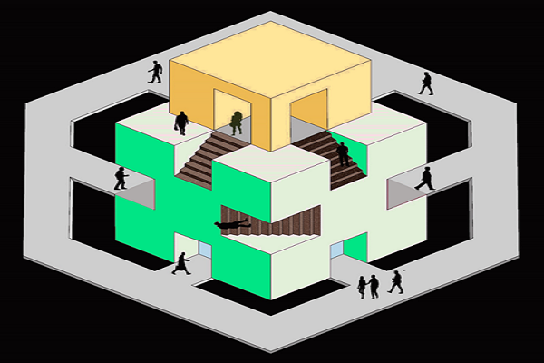
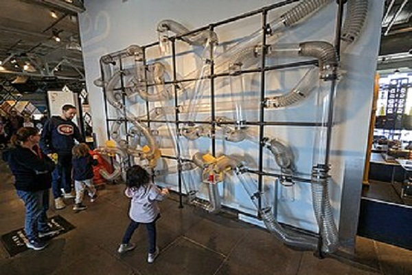
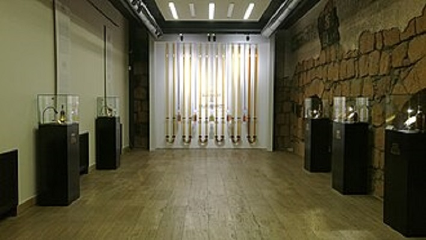
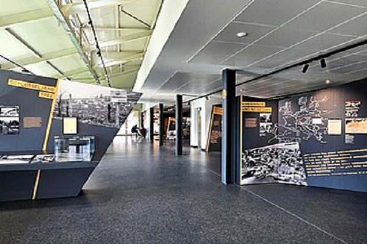
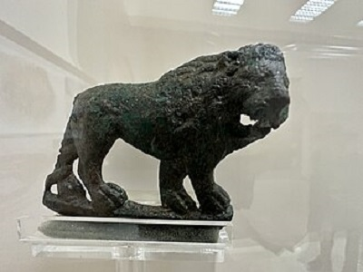
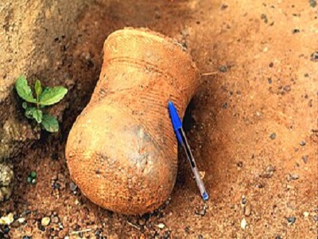
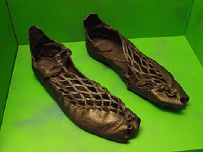
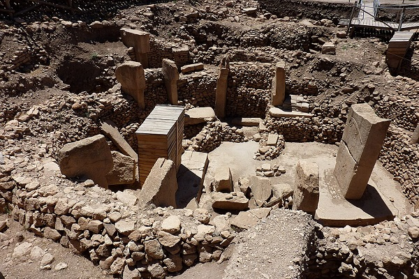
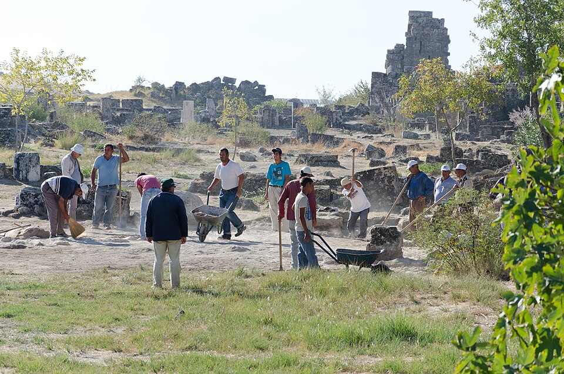
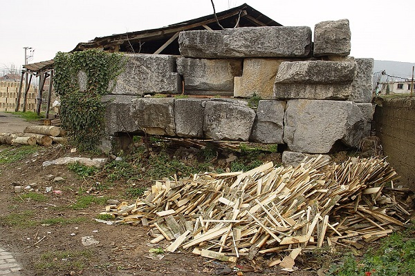

Photograph By Artbreeder, CC0, via Wikimedia Commons
Photograph By Wikimedia Deutschland e. V., CC BY-SA 4.0, via Wikimedia Commons
Image by Gerd Altmann from Pixabay

Image by ADumbl, CC BY-SA 4.0, via Wikimedia Commons
Image by Miao Miao Qu, CC BY-SA 4.0, via Wikimedia Commons
Image by Meanwell Packaging, CC BY 2.0, via Wikimedia Commons
Call Me

Photograph By Avelludo, CC BY-SA 4.0, via Wikimedia Commons
(647) 212-0718
Photograph By RG72, CC BY-SA 4.0, via Wikimedia Commons
(647) 212-0718
Photograph By Barbara Arand, CC BY-SA 4.0, via Wikimedia Commons
(647) 212-0718
Photograph By Richard N Horne, CC BY-SA 4.0, via Wikimedia Commons
(647) 212-0718
Photograph By John Atherton, CC BY-SA 2.0, via Wikimedia Commons
(647) 212-0718
Photograph By Bullenwächter, CC BY 3.0, via Wikimedia Commons
(647) 212-0718
Photograph By Zhengan, CC BY-SA 4.0, via Wikimedia Commons
(647) 212-0718
Photograph By Chris_Parfitt from Morden, Surrey, England, CC BY 2.0, via Wikimedia Commons
(647) 212-0718
Photograph By Dosseman, CC BY-SA 4.0, via Wikimedia Commons
(647) 212-0718Photograph By mcmurryjulie from Pixabay


_1.jpg){kind=link}


.jpg){kind=link}

.JPG){kind=link}